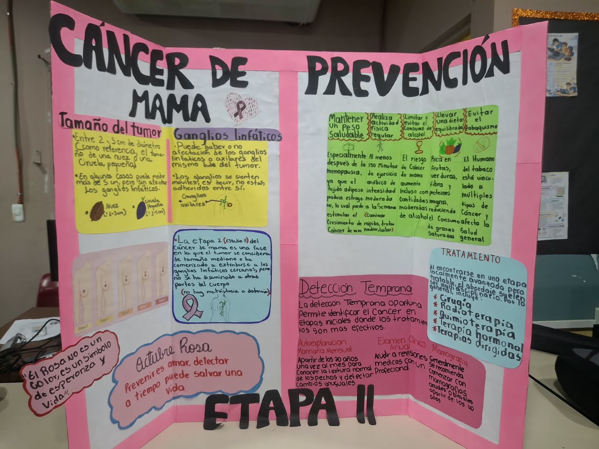
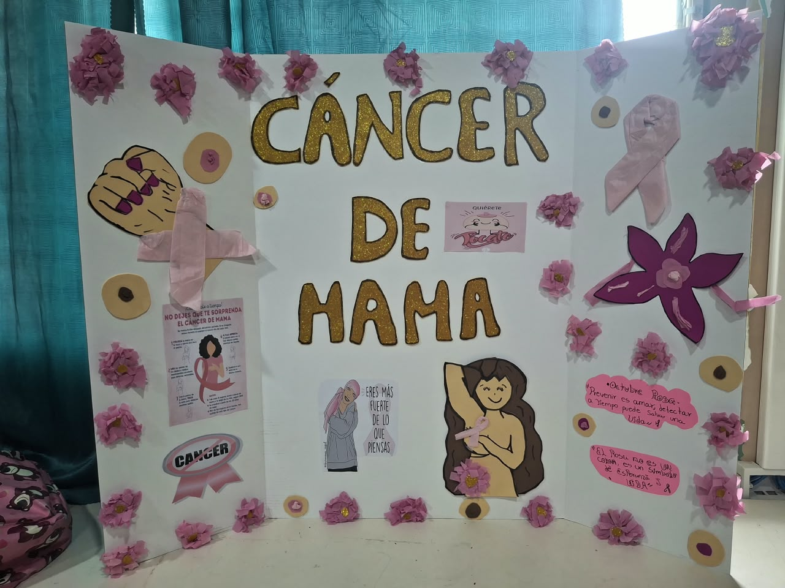
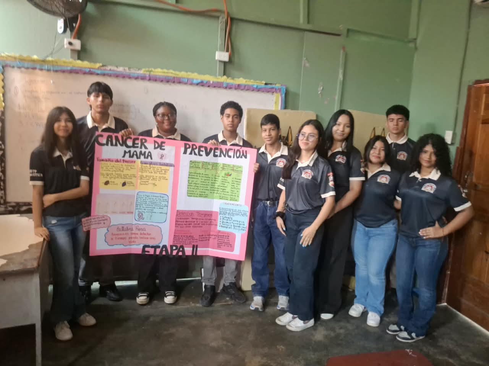
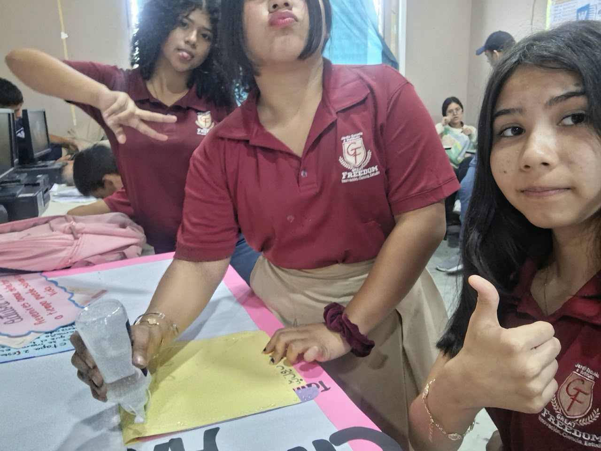

Qué es el cáncer de mama
Ocurre cuando algunas células de la mama crecen sin control y forman un tumor. Puede empezar en los conductos que llevan la leche o en las glándulas que la producen. Si no se trata, las células pueden extenderse a otras partes del cuerpo.
También puede afectar a los hombres, aunque es mucho menos común.
Señales de alerta
Muchos cambios en la mama no son cáncer, pero siempre hay que revisarlos. Consulta si notas alguno de estos:
- Un bulto o endurecimiento nuevo en la mama o la axila
- Cambio en el tamaño o la forma de la mama
- Piel con hoyuelos, como cáscara de naranja, o enrojecida
- Pezón hundido o con secreción que no es leche
- Dolor en una zona que no desaparece
Factores de riesgo
Tener un factor de riesgo no significa que vayas a enfermar, y no tener ninguno no te protege del todo.
- Edad: el riesgo aumenta con los años
- Antecedentes familiares de cáncer de mama u ovario
- Cambios hereditarios en los genes BRCA1 y BRCA2
- Sobrepeso, sedentarismo y consumo de alcohol
- Tabaquismo
Cómo detectarlo a tiempo
La detección temprana combina tres cosas: conocer tu cuerpo, el examen clínico y los estudios de imagen.
Autoexamen mensual
- Mira frente al espejo, con los brazos abajo y luego arriba. Busca cambios de forma, piel o pezón.
- Palpa cada mama con las yemas de los tres dedos centrales, haciendo círculos y cubriendo toda la zona hasta la axila.
- Repite acostada, con una almohada bajo el hombro. También puedes hacerlo en la ducha.
Hazlo siempre en la misma época del ciclo, unos días después de la menstruación.
Controles médicos
Examen clínico: un profesional revisa las mamas durante los chequeos de rutina.
Mamografía: radiografía de la mama que puede encontrar tumores muy pequeños, antes de que se sientan. Se recomienda de forma periódica a partir de cierta edad; el médico indica cuándo empezar según cada caso.
Videos
Mitos y realidades
Toca cada afirmación para ver si es cierta.
«Solo las mujeres con familiares enfermos se enferman»
Falso. La mayoría de las mujeres con cáncer de mama no tiene antecedentes familiares. Los antecedentes aumentan el riesgo, pero no son necesarios.
«Si no duele, no es cáncer»
Falso. Muchos tumores no causan dolor al principio. Un bulto sin dolor igual debe ser revisado.
«Los hombres no tienen cáncer de mama»
Falso. Es poco frecuente, pero los hombres también tienen tejido mamario y pueden enfermar.
«Usar desodorante o sostén con aro causa cáncer de mama»
Falso. Los estudios científicos no han encontrado relación entre estos productos y el cáncer de mama.
«Un bulto en la mama siempre es cáncer»
Falso. La mayoría de los bultos son benignos, como quistes. Aun así, solo un profesional puede confirmarlo.
Nuestro trabajo
Así preparamos y presentamos el proyecto en clase.




Si notas algo, consulta
Pide una cita con un médico o acude a un centro de salud. Mientras más pronto, mejores son las opciones de tratamiento. Esta página es informativa y no sustituye la opinión de un profesional de la salud.
Fuentes consultadas:
Organización Mundial de la Salud: cáncer de mama
American Cancer Society